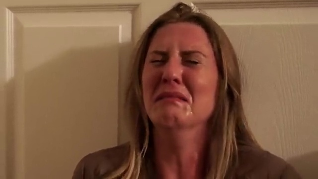
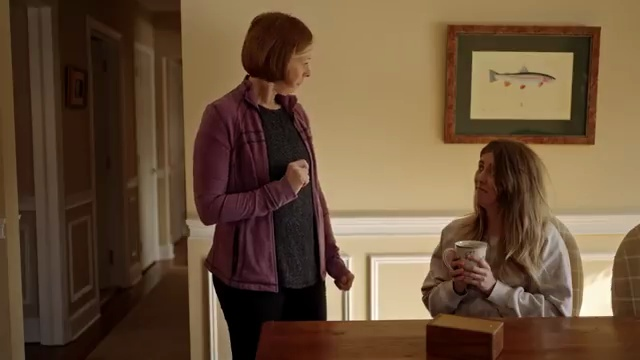
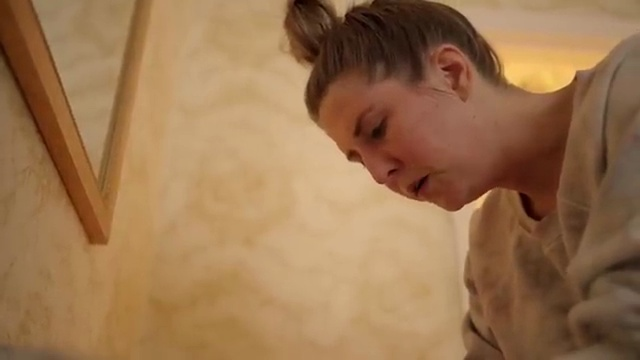
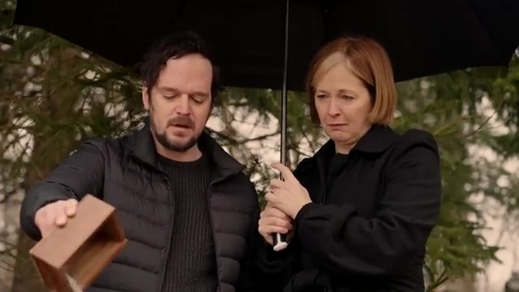

FOG
A young writer returns to her childhood home carrying a final family obligation, a deadline, and years of unresolved tension. FOG follows Jane through a visit where every small exchange threatens to pull her back into the fear, obligation, and guilt she is trying to escape.
Cast
- Amanda Van NostrandJane
- Ellen AdairAnnette
- Kathleen McNennyRose
- Brian McCarthyRay
- Alex AndersonAdam
- Ryan BarrySeth
- Sophia RumbeaMelissa
- Christopher HawthornSean
- Shah MotiaCustomer
Crew
- Alex AndersonWriter, Director, Producer
- Darin QuanCinematography

Film
Stills






Behind the Scenes
BTS 1
BTS 2
BTS 3
BTS 4
BTS 5
BTS 6
Audience Reviews
“This is the best film I’ve ever seen on what it’s really like being an adult child of parents who abused us. Thank you for what feels like ‘being seen.’”— Audience Member
“This captures maternal narcissism so perfectly. Brilliant work, script and cast!”— Audience Member
“You crystalized the dynamic. Flawless acting in that living room. It’s really, really good.”— Audience Member
“You portrayed how hard it was to go back to that childhood house. So many undercurrents. I don’t feel alone after watching it.”— Audience Member
“Such a genuine thing to put down on film. Excellent writing. Kudos to all involved.”— Audience Member
“This is such a genuine movie. It speaks to the human experience. Well done—great script.”— Audience Member
“A mixed soup of opposing emotions. Well done. Fabulous music choices, too!”— Audience Member
“The writing of the mom character is on point.”— Audience Member
“Superb film—one of the most real, heartfelt portrayals of the struggles with narcissistic parents.”— Audience Member
“The lady who played your mom nails it. The theatrics and hysterics are just way too real.”— Audience Member
“Brilliant film. I really like the acting, direction and cinematography. You foreshadow the main points very well!”— Audience Member
“This one makes you laugh and cry and leaves you thinking about it for days. Worth a watch—and maybe more.”— Audience Member
“10/10—raw and real.”— Audience Member
“The fog lifts when you can see your own experience from the outside in a movie like this.”— Audience Member
“Watching this again to match the season. It’s my 26th time. Just love it.”— Audience Member
“Thank you for making this film. My god, was it honest. This felt so true to the experience.”— Audience Member
“A really good movie! I hope many people have the opportunity to enjoy it.”— Audience Member
“I’m so glad I stumbled across this film. I can’t wait to share it with my friends who are mental health counselors.”— Audience Member
“I really appreciated how you built up to it so the audience might doubt the sister’s decision—then knocked that doubt down in one fell swoop.”— Audience Member
“Brilliant film. Very validating, and a topic one doesn’t often come across. Thank you!”— Audience Member
“The pain and guilt of going no contact. Bravo on the writing and acting.”— Audience Member
“Painfully raw, and so well done. Kudos to the writers and everyone involved.”— Audience Member
“This movie is phenomenal. So realistic.”— Audience Member
“You must watch from beginning to end to see how controlled narcissistic behavior is before the mask comes off—and goes back on again.”— Audience Member